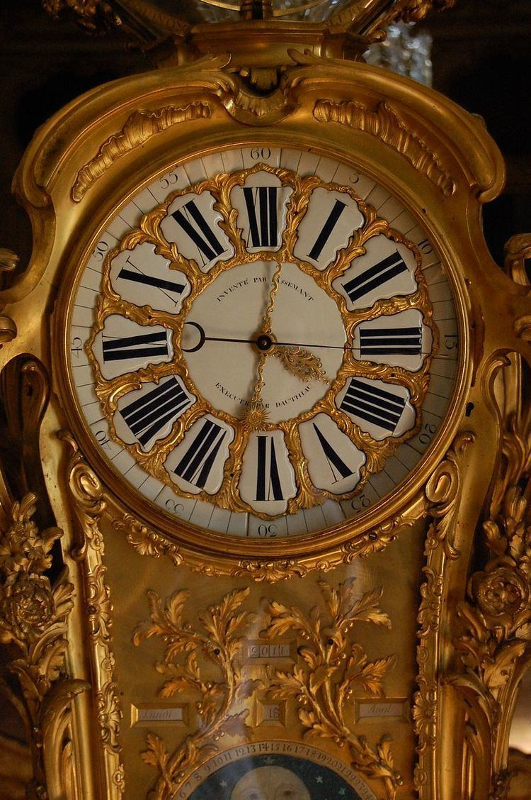
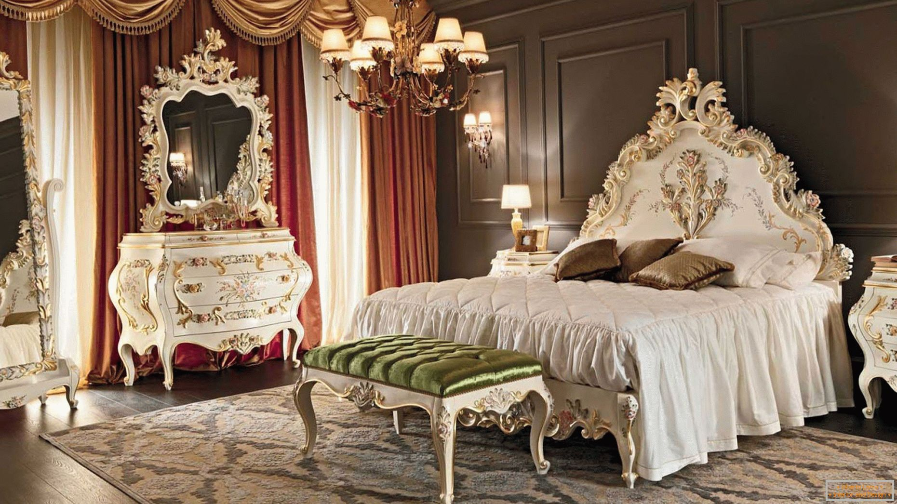

El Rococó es un estilo que nació del cansancio hacia la rigidez del reinado de Luis XIV el Rococó (que surgió en Francia a principios del siglo XVII) A diferencia del Barroco, que usaba colores oscuros y sombras dramáticas, el Rococó es luminoso y suave.
El Rococó no se preocupa por la religión o la guerra; se preocupa por el disfrute. siempre pintando escenas galantes: Aristócratas de picnic, columpios, romances secretos y fiestas en jardines (las famosas fêtes galantes). Mitología pícara: En lugar de dioses castigadores, verás cuadros con Cupido, Venus y ninfas en situaciones juguetonas.

El Rococó a menudo sólo se asocia a las pinturas de Honoré de Fragonard o hacia algunos muebles cargados de detalles pomposos. Pero el estilo Rococó fue más allá, era una filosofía que honraba la vida y el placer, más cerca del las cartas las antiguas cartas de epicuro que de las novelas y noticias trágicas de la época. Este estilo representó más una actitud ante la vida, que una filosofía. el rococó re reflejo en los interiores más que en los exteriores (como en el barroco) y se destacó por los detalles que se diferenciaron de la naturaleza, el pensamiento Rococó aseguraba que la naturaleza brillaba aun mas cuando el hombre la refinaba.

El estilo Rococó, que surgió en Francia a principios del siglo XVIII como una evolución (y a veces una reacción) del Barroco tardío, dejó una marca inconfundible en la arquitectura, aunque su verdadera fuerza se manifestó en el diseño de interiores y la ornamentación. A diferencia de la monumentalidad y el drama del Barroco, el Rococó buscaba la intimidad, la elegancia y una ligereza casi etérea. Aquí te detallo cómo influyó en la arquitectura. En el Rococó, las fachadas de los edificios solían mantenerse relativamente sencillas o clásicas, mientras que el interior explotaba en una decoración exuberante. La arquitectura se volvió un "caparazón" para albergar salones de formas circulares u ovales, diseñados para la vida social de la aristocracia.